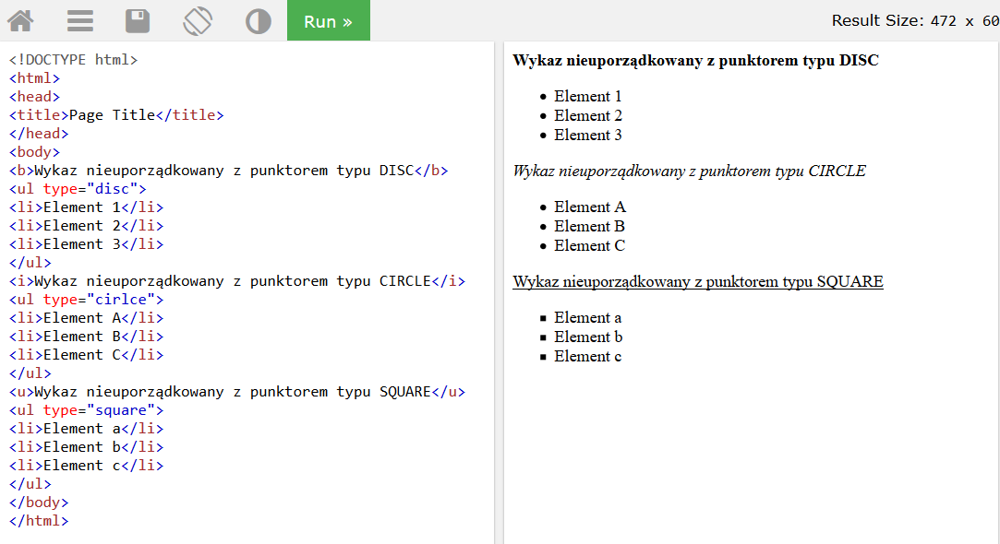

Struktura dokumentu HTML
W najnowszej specyfikacji języka HTML5 nastąpiły zmiany w stosunku do HTML4.01. Do najważniejszych zaliczamy dopisanie nowych elementów:
- Dotyczących podziału strony np.: <header>, <footer>, <nav>, <article> oraz <section>.
- Dotyczących atrybutów znaczników do tworzenia formularzy np.: number, date, time, calendar oraz range.
- Dotyczących obsługi grafiki na stronie np.: <svg> oraz <canvas>.
- Dotyczących obsługi multimediów np.: <audio> and <video>.
Wszystkie znaczniki języka HTML możemy podzielić na następujące grupy:
- znaczniki edycji i formatowania tekstu,
- znaczniki do tworzenia wykazów,
- znaczniki do tworzenia odsyłaczy,
- znaczniki podziału strony
- znaczniki tworzące tabele,
- znaczniki tworzące formularze,
- znaczniki do wstawiania elementów multimedialnych oraz API.
Wykazy
Umożliwiają one tworzenie usystematyzowanych grup informacji. Mamy możliwość tworzenia wykazów nieuporządkowanych (wypunktowanych) oraz uporządkowanych (numerowanych). Dzięki możliwości zagnieżdżania wykazów, można stworzyć listę punktów wraz z podpunktami. Podpunkty będą przesunięte bardziej w prawo w stosunku do punktów nadrzędnych, dzięki czemu wykaz będzie czytelny i zgodny z zasadami edycji tekstu.
Przykład wykazów nieuporządkowanych
Przykład wykazów uporządkowanych
Przykład wykazu zagnieżdżonego
Zastosowanie atrybutów listy